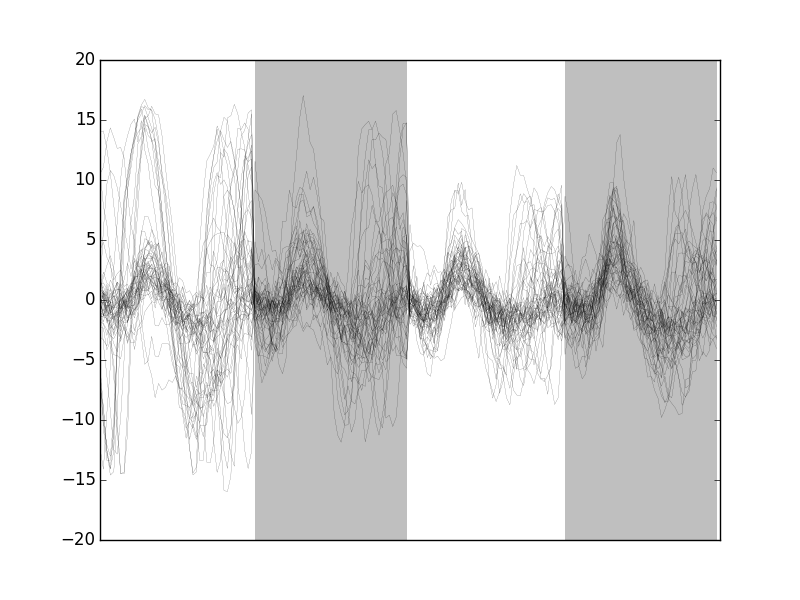

Spike Sorting The Elementary Way
Table of Contents
- 1. Downloading the data
- 2. Importing the required modules and loading the data
- 3. Preliminary analysis
- 4. Plot the data
- 5. Data renormalization
- 6. Detect peaks
- 7. Cuts
- 8. Dimension reduction
- 9. Clustering with K-Means
- 10. Spike "peeling": a "Brute force" superposition resolution
- 11. Getting the spike trains
- 12. Individual function definitions
1 Downloading the data
The data are available and can be downloaded with (watch out, you must use slightly different commands if you're using Python 2):
from urllib.request import urlretrieve # Python 3
# from urllib import urlretrieve # Python 2
data_names = ['Locust_' + str(i) + '.dat.gz' for i in range(1,5)]
data_src = ['http://xtof.disque.math.cnrs.fr/data/' + n
for n in data_names]
[urlretrieve(data_src[i],data_names[i]) for i in range(4)]
They were stored as floats coded on 64 bits and compressed with gnuzip. So we decompress it:
import gzip
import shutil
data_snames = ['Locust_' + str(i) + '.dat' for i in range(1,5)]
for in_name, out_name in zip(data_names,data_snames):
with gzip.open(in_name,'rb') as f_in:
with open(out_name,'wb') as f_out:
shutil.copyfileobj(f_in, f_out)
20 seconds of data sampled at 15 kHz are contained in these files (see PouzatEtAl_2002 for details). Four files corresponding to the four electrodes or recording sites of a tetrode (see Sec. why-tetrode) are used.
2 Importing the required modules and loading the data
The individual functions developed for this kind of analysis are defined at the end of this document (Sec. 12). They can also be downloaded as a single file sorting_with_python.py which must then be imported with for instance:
import sorting_with_python as swp
where it is assumed that the working directory of your python session is the directory where the file sorting_with_python.py can be found.
We are going to use numpy and pylab (we will also use pandas later on, but to generate only one figure so you can do the analysis without it). We are also going to use the interactive mode of the latter:
import numpy as np import matplotlib.pylab as plt plt.ion()
Python 3 was used to perform this analysis but everything also works with Python 2. We load the data with:
# Create a list with the file names
data_files_names = ['Locust_' + str(i) + '.dat' for i in range(1,5)]
# Get the lenght of the data in the files
data_len = np.unique(list(map(len, map(lambda n:
np.fromfile(n,np.double),
data_files_names))))[0]
# Load the data in a list of numpy arrays
data = [np.fromfile(n,np.double) for n in data_files_names]
3 Preliminary analysis
We are going to start our analysis by some "sanity checks" to make sure that nothing "weird" happened during the recording.
3.1 Five number summary
We should start by getting an overall picture of the data like the one provided by the mquantiles method of module scipy.stats.mstats using it to output a five-number summary. The five numbers are the minimum, the first quartile, the median, the third quartile and the maximum:
from scipy.stats.mstats import mquantiles np.set_printoptions(precision=3) [mquantiles(x,prob=[0,0.25,0.5,0.75,1]) for x in data]
[array([ -9.074, -0.371, -0.029, 0.326, 10.626]), array([ -8.229, -0.45 , -0.036, 0.396, 11.742]), array([-6.89 , -0.53 , -0.042, 0.469, 9.849]), array([ -7.347, -0.492, -0.04 , 0.431, 10.564])]
In the above result, each row corresponds to a recording channel, the first column contains the minimal value; the second, the first quartile; the third, the median; the fourth, the third quartile; the fifth, the maximal value.
We see that the data range (maximum - minimum) is similar (close to 20) on the four recording sites. The inter-quartiles ranges are also similar.
3.2 Were the data normalized?
We can check next if some processing like a division by the standard deviation (SD) has been applied:
[np.std(x) for x in data]
[0.99999833333194166, 0.99999833333193622, 0.99999833333194788, 0.99999833333174282]
We see that SD normalization was indeed applied to these data…
3.3 Discretization step amplitude
We can easily obtain the size of the digitization set:
[np.min(np.diff(np.sort(np.unique(x)))) for x in data]
[0.0067098450784115471, 0.0091945001879327748, 0.011888432902217971, 0.0096140421286605715]
4 Plot the data
Plotting the data for interactive exploration is trivial. The only trick is to add (or subtract) a proper offest (that we get here using the maximal value of each channel from our five-number summary), this is automatically implemented in our plot_data_list function:
tt = np.arange(0,data_len)/1.5e4 swp.plot_data_list(data,tt,0.1)
The first channel is drawn as is, the second is offset downward by the sum of its maximal value and of the absolute value of the minimal value of the first, etc. We then get something like Fig. \ref{fig:WholeRawData}.
Figure 1: The whole (20 s) Locust antennal lobe data set.
It is also good to "zoom in" and look at the data with a finer time scale (Fig. \ref{fig:First200ms}) with:
plt.xlim([0,0.2])

Figure 2: First 200 ms of the Locust data set.
5 Data renormalization
We are going to use a median absolute deviation (MAD) based renormalization. The goal of the procedure is to scale the raw data such that the noise SD is approximately 1. Since it is not straightforward to obtain a noise SD on data where both signal (i.e., spikes) and noise are present, we use this robust type of statistic for the SD:
data_mad = list(map(swp.mad,data)) data_mad
[0.51729684828925626, 0.62706123501700972, 0.74028320607479514, 0.68418138527772443]
And we normalize accordingly (we also subtract the median which is not exactly 0):
data = list(map(lambda x: (x-np.median(x))/swp.mad(x), data))
We can check on a plot (Fig. \ref{fig:site1-with-MAD-and-SD}) how MAD and SD compare:
plt.plot(tt,data[0],color="black")
plt.xlim([0,0.2])
plt.ylim([-17,13])
plt.axhline(y=1,color="red")
plt.axhline(y=-1,color="red")
plt.axhline(y=np.std(data[0]),color="blue",linestyle="dashed")
plt.axhline(y=-np.std(data[0]),color="blue",linestyle="dashed")
plt.xlabel('Time (s)')
plt.ylim([-5,10])
Figure 3: First 200 ms on site 1 of the Locust data set. In red: +/- the MAD; in dashed blue +/- the SD.
5.1 A quick check that the MAD "does its job"
We can check that the MAD does its job as a robust estimate of the noise standard deviation by looking at Q-Q plots of the whole traces normalized with the MAD and normalized with the "classical" SD (Fig. \ref{fig:check-MAD}):
dataQ = map(lambda x:
mquantiles(x, prob=np.arange(0.01,0.99,0.001)),data)
dataQsd = map(lambda x:
mquantiles(x/np.std(x), prob=np.arange(0.01,0.99,0.001)),
data)
from scipy.stats import norm
qq = norm.ppf(np.arange(0.01,0.99,0.001))
plt.plot(np.linspace(-3,3,num=100),np.linspace(-3,3,num=100),
color='grey')
colors = ['black', 'orange', 'blue', 'red']
for i,y in enumerate(dataQ):
plt.plt.plot(qq,y,color=colors[i])
for i,y in enumerate(dataQsd):
plt.plot(qq,y,color=colors[i],linestyle="dashed")
plt.xlabel('Normal quantiles')
plt.ylabel('Empirical quantiles')
Figure 4: Performances of MAD based vs SD based normalizations. After normalizing the data of each recording site by its MAD (plain colored curves) or its SD (dashed colored curves), Q-Q plot against a standard normal distribution were constructed. Colors: site 1, black; site 2, orange; site 3, blue; site 4, red.
We see that the behavior of the "away from normal" fraction is much more homogeneous for small, as well as for large in fact, quantile values with the MAD normalized traces than with the SD normalized ones. If we consider automatic rules like the three sigmas we are going to reject fewer events (i.e., get fewer putative spikes) with the SD based normalization than with the MAD based one.
6 Detect peaks
We are going to filter the data slightly using a "box" filter of length 3. That is, the data points of the original trace are going to be replaced by the average of themselves with their four nearest neighbors. We will then scale the filtered traces such that the MAD is one on each recording sites and keep only the parts of the signal which above 4:
from scipy.signal import fftconvolve
from numpy import apply_along_axis as apply
data_filtered = apply(lambda x:
fftconvolve(x,np.array([1,1,1,1,1])/5.,'same'),
1,np.array(data))
data_filtered = (data_filtered.transpose() / \
apply(swp.mad,1,data_filtered)).transpose()
data_filtered[data_filtered < 4] = 0
We can see the difference between the raw trace and the filtered and rectified one (Fig. \ref{fig:compare-raw-and-filtered-data}) on which spikes are going to be detected with:
plt.plot(tt, data[0],color='black')
plt.axhline(y=4,color="blue",linestyle="dashed")
plt.plot(tt, data_filtered[0,],color='red')
plt.xlim([0,0.2])
plt.ylim([-5,10])
plt.xlabel('Time (s)')
Figure 5: First 200 ms on site 1 of data set data. The raw data are shown in black, the detection threshold appears in dashed blue and the filtered and rectified trace on which spike detection is going to be preformed appears in red.
We now use function peak on the sum of the rows of our filtered and rectified version of the data:
sp0 = swp.peak(data_filtered.sum(0))
Giving 1795 spikes, a mean inter-event interval of 167.0 sampling points, a standard deviation of 144.0 sampling points, a smallest inter-event interval of 16 sampling points and a largest of 1157 sampling points.
6.1 Interactive spike detection check
We can then check the detection quality with:
swp.plot_data_list_and_detection(data,tt,sp0) plt.xlim([0,0.2])
Figure 6: First 200 ms of data set data. The raw data are shown in black, the detected events are signaled by red dots (a dot is put on each recording site at the amplitude on that site at that time).
6.2 Split the data set in two parts
As explained in the text, we want to "emulate" a long data set analysis where the model is estimated on the early part before doing template matching on what follows. We therefore get an "early" and a "late" part by splitting the data set in two:
sp0E = sp0[sp0 <= data_len/2.] sp0L = sp0[sp0 > data_len/2.]
In sp0E, the number of detected events is: 908 ; the mean inter-event interval is: 165.0; the standard deviation of the inter-event intervals is: 139.0; the smallest inter-event interval is: 16 sampling points long; the largest inter-event interval is: 931 sampling points long.
In sp0L, the number of detected events is: 887; the mean inter-event interval is: 169.0; the standard deviation of the inter-event intervals is: 149.0; the smallest inter-event interval is: 16 sampling points long; the largest inter-event interval is: 1157 sampling points long.
7 Cuts
After detecting our spikes, we must make our cuts in order to create our events' sample. The obvious question we must first address is: How long should our cuts be? The pragmatic way to get an answer is:
- Make cuts much longer than what we think is necessary, like 50 sampling points on both sides of the detected event's time.
- Compute robust estimates of the "central" event (with the
median) and of the dispersion of the sample around this central event (with theMAD). - Plot the two together and check when does the
MADtrace reach the background noise level (at 1 since we have normalized the data). - Having the central event allows us to see if it outlasts significantly the region where the
MADis above the background noise level.
Clearly cutting beyond the time at which the MAD hits back the noise level should not bring any useful information as far a classifying the spikes is concerned. So here we perform this task as follows:
evtsE = swp.mk_events(sp0E,np.array(data),49,50) evtsE_median=apply(np.median,0,evtsE) evtsE_mad=apply(swp.mad,0,evtsE)
plt.plot(evtsE_median, color='red', lw=2)
plt.axhline(y=0, color='black')
for i in np.arange(0,400,100):
plt.axvline(x=i, color='black', lw=2)
for i in np.arange(0,400,10):
plt.axvline(x=i, color='grey')
plt.plot(evtsE_median, color='red', lw=2)
plt.plot(evtsE_mad, color='blue', lw=2)
Figure 7: Robust estimates of the central event (black) and of the sample's dispersion around the central event (red) obtained with "long" (100 sampling points) cuts. We see clearly that the dispersion is back to noise level 15 points before the peak and 30 points after the peak.
Fig. \ref{fig:check-MAD-on-long-cuts} clearly shows that starting the cuts 15 points before the peak and ending them 30 points after should fulfill our goals. We also see that the central event slightly outlasts the window where the MAD is larger than 1.
7.1 Events
Once we are satisfied with our spike detection, at least in a provisory way, and that we have decided on the length of our cuts, we proceed by making cuts around the detected events. :
evtsE = swp.mk_events(sp0E,np.array(data),14,30)
We can visualize the first 200 events with:
swp.plot_events(evtsE,200)
Figure 8: First 200 events of evtsE. Cuts from the four recording sites appear one after the other. The background (white / grey) changes with the site. In red, robust estimate of the "central" event obtained by computing the pointwise median. In blue, robust estimate of the scale (SD) obtained by computing the pointwise MAD.
7.2 Noise
Getting an estimate of the noise statistical properties is an essential ingredient to build respectable goodness of fit tests. In our approach "noise events" are essentially anything that is not an "event" is the sense of the previous section. I wrote essentially and not exactly since there is a little twist here which is the minimal distance we are willing to accept between the reference time of a noise event and the reference time of the last preceding and of the first following "event". We could think that keeping a cut length on each side would be enough. That would indeed be the case if all events were starting from and returning to zero within a cut. But this is not the case with the cuts parameters we chose previously (that will become clear soon). You might wonder why we chose so short a cut length then. Simply to avoid having to deal with too many superposed events which are the really bothering events for anyone wanting to do proper sorting.
To obtain our noise events we are going to use function mk_noise which takes the same arguments as function mk_events plus two numbers:
safety_factora number by which the cut length is multiplied and which sets the minimal distance between the reference times discussed in the previous paragraph.sizethe maximal number of noise events one wants to cut (the actual number obtained might be smaller depending on the data length, the cut length, the safety factor and the number of events).
We cut noise events with a rather large safety factor:
noiseE = swp.mk_noise(sp0E,np.array(data),14,30,safety_factor=2.5,size=2000)
7.3 Getting "clean" events
Our spike sorting has two main stages, the first one consist in estimating a model and the second one consists in using this model to classify the data. Our model is going to be built out of reasonably "clean" events. Here by clean we mean events which are not due to a nearly simultaneous firing of two or more neurons; and simultaneity is defined on the time scale of one of our cuts. When the model will be subsequently used to classify data, events are going to decomposed into their (putative) constituent when they are not "clean", that is, superposition are going to be looked and accounted for.
In order to eliminate the most obvious superpositions we are going to use a rather brute force approach, looking at the sides of the central peak of our median event and checking if individual events are not too large there, that is do not exhibit extra peaks. We first define a function doing this job:
def good_evts_fct(samp, thr=3):
samp_med = apply(np.median,0,samp)
samp_mad = apply(swp.mad,0,samp)
above = samp_med > 0
samp_r = samp.copy()
for i in range(samp.shape[0]): samp_r[i,above] = 0
samp_med[above] = 0
res = apply(lambda x:
np.all(abs((x-samp_med)/samp_mad) < thr),
1,samp_r)
return res
We then apply our new function to our sample using a threshold of 8 (set by trial and error):
goodEvts = good_evts_fct(evtsE,8)
Out of 898 events we get 843 "good" ones. As usual, the first 200 good ones can be visualized with:
swp.plot_events(evtsE[goodEvts,:][:200,:])
Figure 9: First 200 "good" events of evtsE. Cuts from the four recording sites appear one after the other. The background (white / grey) changes with the site. In red, robust estimate of the "central" event obtained by computing the pointwise median. In blue, robust estimate of the scale (SD) obtained by computing the pointwise MAD.
The "bad" guys can be visualized with:
swp.plot_events(evtsE[goodEvts.__neg__(),:],
show_median=False,
show_mad=False)

Figure 10: The 50 "bad" events of evtsE. Cuts from the four recording sites appear one after the other. The background (white / grey) changes with the site.
8 Dimension reduction
8.1 Principal Component Analysis (PCA)
Our events are living right now in an 180 dimensional space (our cuts are 45 sampling points long and we are working with 4 recording sites simultaneously). It turns out that it hard for most humans to perceive structures in such spaces. It also hard, not to say impossible with a realistic sample size, to estimate probability densities (which is what model based clustering algorithms are actually doing) in such spaces, unless one is ready to make strong assumptions about these densities. It is therefore usually a good practice to try to reduce the dimension of the sample space used to represent the data. We are going to that with principal component analysis (PCA), using it on our "good" events.
from numpy.linalg import svd varcovmat = np.cov(evtsE[goodEvts,:].T) u, s, v = svd(varcovmat)
With this "back to the roots" approach, u should be an orthonormal matrix whose column are made of the principal components (and v should be the transpose of u since our matrix varcovmat is symmetric and real by construction). s is a vector containing the amount of sample variance explained by each principal component.
8.2 Exploring PCA results
PCA is a rather abstract procedure to most of its users, at least when they start using it. But one way to grasp what it does is to plot the mean event plus or minus, say five times, each principal components like:
evt_idx = range(180)
evtsE_good_mean = np.mean(evtsE[goodEvts,:],0)
for i in range(4):
plt.subplot(2,2,i+1)
plt.plot(evt_idx,evtsE_good_mean, 'black',evt_idx,
evtsE_good_mean + 5 * u[:,i],
'red',evt_idx,evtsE_good_mean - 5 * u[:,i], 'blue')
plt.title('PC' + str(i) + ': ' + str(round(s[i]/sum(s)*100)) +'%')
Figure 11: PCA of evtsE (for "good" events) exploration (PC 1 to 4). Each of the 4 graphs shows the mean waveform (black), the mean waveform + 5 x PC (red), the mean - 5 x PC (blue) for each of the first 4 PCs. The fraction of the total variance "explained" by the component appears in the title of each graph.
We can see on Fig. \ref{fig:explore-evtsE-PC0to3} that the first 3 PCs correspond to pure amplitude variations. An event with a large projection (score) on the first PC is smaller than the average event on recording sites 1, 2 and 3, but not on 4. An event with a large projection on PC 1 is larger than average on site 1, smaller than average on site 2 and 3 and identical to the average on site 4. An event with a large projection on PC 2 is larger than the average on site 4 only. PC 3 is the first principal component corresponding to a change in shape as opposed to amplitude. A large projection on PC 3 means that the event as a shallower first valley and a deeper second valley than the average event on all recording sites.
We now look at the next 4 principal components:
for i in range(4,8):
plt.subplot(2,2,i-3)
plt.plot(evt_idx,evtsE_good_mean, 'black',
evt_idx,evtsE_good_mean + 5 * u[:,i], 'red',
evt_idx,evtsE_good_mean - 5 * u[:,i], 'blue')
plt.title('PC' + str(i) + ': ' + str(round(s[i]/sum(s)*100)) +'%')
Figure 12: PCA of evtsE (for "good" events) exploration (PC 4 to 7). Each of the 4 graphs shows the mean waveform (black), the mean waveform + 5 x PC (red), the mean - 5 x PC (blue). The fraction of the total variance "explained" by the component appears in between parenthesis in the title of each graph.
An event with a large projection on PC 4 (Fig. \ref{fig:explore-evtsE-PC4to7}) tends to be "slower" than the average event. An event with a large projection on PC 5 exhibits a slower kinetics of its second valley than the average event. PC 4 and 5 correspond to effects shared among recording sites. PC 6 correspond also to a "change of shape" effect on all sites except the first. Events with a large projection on PC 7 rise slightly faster and decay slightly slower than the average event on all recording site. Notice also that PC 7 has a "noisier" aspect than the other suggesting that we are reaching the limit of the "events extra variability" compared to the variability present in the background noise.
This guess can be confirmed by comparing the variance of the "good" events sample with the one of the noise sample to which the variance contributed by the first K PCs is added:
noiseVar = sum(np.diag(np.cov(noiseE.T))) evtsVar = sum(s) [(i,sum(s[:i])+noiseVar-evtsVar) for i in range(15)]
[(0, -577.55150481947305), (1, -277.46515432919722), (2, -187.56341162342278), (3, -128.03907765900999), (4, -91.318669099617864), (5, -58.839887602314093), (6, -36.36306744692456), (7, -21.543722414005629), (8, -8.2644951775207574), (9, 0.28488929424531761), (10, 6.9067335500932359), (11, 13.341548838374251), (12, 19.472089099226878), (13, 25.255335647533229), (14, 29.102104713041399)]
This suggests that keeping the first 10 PCs should be more than enough.
8.3 Static representation of the projected data
We can build a scatter plot matrix showing the projections of our "good" events sample onto the plane defined by pairs of the few first PCs:
evtsE_good_P0_to_P3 = np.dot(evtsE[goodEvts,:],u[:,0:4])
from pandas.tools.plotting import scatter_matrix
import pandas as pd
df = pd.DataFrame(evtsE_good_P0_to_P3)
scatter_matrix(df,alpha=0.2,s=4,c='k',figsize=(6,6),
diagonal='kde',marker=".")
Figure 13: Scatter plot matrix of the projections of the good events in evtsE onto the planes defined by the first 4 PCs. The diagonal shows a smooth (Gaussian kernel based) density estimate of the projection of the sample on the corresponding PC. Using the first 8 PCs does not make finner structure visible.
8.4 Dynamic visualization of the data with GGobi
The best way to discern structures in "high dimensional" data is to dynamically visualize them. To this end, the tool of choice is GGobi, an open source software available on Linux, Windows and MacOS. We start by exporting our data in csv format to our disk:
import csv
f = open('evtsE.csv','w')
w = csv.writer(f)
w.writerows(np.dot(evtsE[goodEvts,:],u[:,:8]))
f.close()
The following terse procedure should allow the reader to get going with GGobi:
- Launch
GGobi - In menu:
File->Open, selectevtsE.csv. - Since the glyphs are rather large, start by changing them for smaller ones:
- Go to menu:
Interaction->Brush. - On the Brush panel which appeared check the
Persistentbox. - Click on
Choose color & glyph.... - On the chooser which pops out, click on the small dot on the upper left of the left panel.
- Go back to the window with the data points.
- Right click on the lower right corner of the rectangle which appeared on the figure after you selected
Brush. - Dragg the rectangle corner in order to cover the whole set of points.
- Go back to the
Interactionmenu and select the first row to go back where you were at the start.
- Go to menu:
- Select menu:
View->Rotation. - Adjust the speed of the rotation in order to see things properly.
We easily discern 10 rather well separated clusters. Meaning that an automatic clustering with 10 clusters on the first 3 principal components should do the job.
9 Clustering with K-Means
Since our dynamic visualization shows 10 well separated clusters in 3 dimension, a simple k-means should do the job. We are using here the KMeans class of scikit-learn:
from sklearn.cluster import KMeans km10 = KMeans(n_clusters=10, init='k-means++', n_init=100, max_iter=100) km10.fit(np.dot(evtsE[goodEvts,:],u[:,0:3])) c10 = km10.fit_predict(np.dot(evtsE[goodEvts,:],u[:,0:3]))
In order to facilitate comparison when models with different numbers of clusters or when different models are used, clusters are sorted by "size". The size is defined here as the sum of the absolute value of the median of the cluster (an L1 norm):
cluster_median = list([(i,
np.apply_along_axis(np.median,0,
evtsE[goodEvts,:][c10 == i,:]))
for i in range(10)
if sum(c10 == i) > 0])
cluster_size = list([np.sum(np.abs(x[1])) for x in cluster_median])
new_order = list(reversed(np.argsort(cluster_size)))
new_order_reverse = sorted(range(len(new_order)), key=new_order.__getitem__)
c10b = [new_order_reverse[i] for i in c10]
9.1 Cluster specific plots
Looking at the first 5 clusters we get Fig. \ref{fig:events-clusters0to4} with:
plt.subplot(511) swp.plot_events(evtsE[goodEvts,:][np.array(c10b) == 0,:]) ylim([-15,20]) plt.subplot(512) swp.plot_events(evtsE[goodEvts,:][np.array(c10b) == 1,:]) ylim([-15,20]) plt.subplot(513) swp.plot_events(evtsE[goodEvts,:][np.array(c10b) == 2,:]) ylim([-15,20]) plt.subplot(514) swp.plot_events(evtsE[goodEvts,:][np.array(c10b) == 3,:]) ylim([-15,20]) plt.subplot(515) swp.plot_events(evtsE[goodEvts,:][np.array(c10b) == 4,:]) ylim([-15,20])
Figure 14: First 5 clusters. Cluster 0 at the top, cluster 4 at the bottom. Red, cluster specific central / median event. Blue, cluster specific MAD.
Looking at the last 5 clusters we get Fig. \ref{fig:events-clusters5to9} with:
plt.subplot(511) swp.plot_events(evtsE[goodEvts,:][np.array(c10b) == 5,:]) ylim([-10,10]) plt.subplot(512) swp.plot_events(evtsE[goodEvts,:][np.array(c10b) == 6,:]) ylim([-10,10]) plt.subplot(513) swp.plot_events(evtsE[goodEvts,:][np.array(c10b) == 7,:]) ylim([-10,10]) plt.subplot(514) swp.plot_events(evtsE[goodEvts,:][np.array(c10b) == 8,:]) ylim([-10,10]) plt.subplot(515) swp.plot_events(evtsE[goodEvts,:][np.array(c10b) == 9,:]) ylim([-10,10])
Figure 15: Last 5 clusters. Cluster 5 at the top, cluster 9 at the bottom. Red, cluster specific central / median event. Blue, cluster specific MAD. Notice the change in ordinate scale compared to the previous figure.
9.2 Results inspection with GGobi
We start by checking our clustering quality with GGobi. To this end we export the data and the labels of each event:
f = open('evtsEsorted.csv','w')
w = csv.writer(f)
w.writerows(np.concatenate((np.dot(evtsE[goodEvts,:],u[:,:8]),
np.array([c10b]).T),
axis=1))
f.close()
An again succinct description of how to do the dynamical visual check is:
- Load the new data into GGobi like before.
- In menu:
Display->New Scatterplot Display, selectevtsEsorted.csv. - Change the glyphs like before.
- In menu:
Tools->Color Schemes, select a scheme with 10 colors, likeSpectral,Spectral 10. - In menu:
Tools->Automatic Brushing, selectevtsEsorted.csvtab and, within this tab, select variablec10b. Then click onApply. - Select
View->Rotationlike before and see your result.
10 Spike "peeling": a "Brute force" superposition resolution
We are going to resolve (the most "obvious") superpositions by a "recursive peeling method":
- Events are detected and cut from the raw data or from an already peeled version of the data.
- The closest center (in term of Euclidean distance) to the event is found.
- If the residual sum of squares (
RSS), that is: (actual data - best center)\(^2\), is smaller than the squared norm of a cut, the best center is subtracted from the data on which detection was performed—jitter is again compensated for at this stage. - Go back to step 1 or stop.
To apply this procedure, we need, for each cluster, estimates of its center and of its first two derivatives. Function mk_center_dictionary does the job for us. We must moreover build our clusters' centers such that they can be used for subtraction, this implies that we should make them long enough, on both side of the peak, to see them go back to baseline. Formal parameters before and after bellow should therefore be set to larger values than the ones used for clustering:
centers = { "Cluster " + str(i) :
swp.mk_center_dictionary(sp0E[goodEvts][np.array(c10b)==i],
np.array(data))
for i in range(10)}
10.1 First peeling
Function classify_and_align_evt is used next. For each detected event, it matches the closest template, correcting for the jitter, if the closest template is close enough:
swp.classify_and_align_evt(sp0[0],np.array(data),centers)
['Cluster 7', 281, -0.14107833394834746]
We can use the function on every detected event. A trick here is to store the matrix version of the data in order to avoid the conversion of the list of vectors (making the data of the different channels) into a matrix for each detected event:
data0 = np.array(data)
round0 = [swp.classify_and_align_evt(sp0[i],data0,centers)
for i in range(len(sp0))]
We can check how many events got unclassified on a total of 1766 :
len([x[1] for x in round0 if x[0] == '?'])
22
Using function predict_data, we create an ideal data trace given events' positions, events' origins and a clusters' catalog:
pred0 = swp.predict_data(round0,centers)
We then subtract the prediction (pred0) from the data (data0) to get the "peeled" data (data1):
data1 = data0 - pred0
We can compare the original data with the result of the "first peeling" to get Fig. \ref{fig:FirstPeeling}:
plt.plot(tt, data0[0,], color='black')
plt.plot(tt, data1[0,], color='red',lw=0.3)
plt.plot(tt, data0[1,]-15, color='black')
plt.plot(tt, data1[1,]-15, color='red',lw=0.3)
plt.plot(tt, data0[2,]-25, color='black')
plt.plot(tt, data1[2,]-25, color='red',lw=0.3)
plt.plot(tt, data0[3,]-40, color='black')
plt.plot(tt, data1[3,]-40, color='red',lw=0.3)
plt.xlabel('Time (s)')
plt.xlim([0.9,1])
Figure 16: 100 ms of the locust data set. Black, original data; red, after first peeling.
10.2 Second peeling
We then take data1 as our former data0 and we repeat the procedure. We do it with slight modifications: detection is done on a single recording site and a shorter filter length is used before detecting the events. Doing detection on a single site (here site 0) allows us to correct some drawbacks of our crude spike detection method. When we used it the first time we summed the filtered and rectified versions of the data before looking at peaks. This summation can lead to badly defined spike times when two neurons that are large on different recording sites, say site 0 and site 1 fire at nearly the same time. The summed event can then have a peak in between the two true peaks and our jitter correction cannot resolve that. We are therefore going to perform detection on the different sites. The jitter estimation and the subtraction are always going to be done on the 4 recording sites:
data_filtered = np.apply_along_axis(lambda x:
fftconvolve(x,np.array([1,1,1])/3.,
'same'),
1,data1)
data_filtered = (data_filtered.transpose() /
np.apply_along_axis(swp.mad,1,
data_filtered)).transpose()
data_filtered[data_filtered < 4] = 0
sp1 = swp.peak(data_filtered[0,:])
We classify the events and obtain the new prediction and the new "data":
round1 = [swp.classify_and_align_evt(sp1[i],data1,centers)
for i in range(len(sp1))]
pred1 = swp.predict_data(round1,centers)
data2 = data1 - pred1
We can check how many events got unclassified on a total of 244:
len([x[1] for x in round1 if x[0] == '?'])
58
We can compare the first peeling with the second one (Fig. \ref{fig:SecondPeeling}):
plt.plot(tt, data1[0,], color='black')
plt.plot(tt, data2[0,], color='red',lw=0.3)
plt.plot(tt, data1[1,]-15, color='black')
plt.plot(tt, data2[1,]-15, color='red',lw=0.3)
plt.plot(tt, data1[2,]-25, color='black')
plt.plot(tt, data2[2,]-25, color='red',lw=0.3)
plt.plot(tt, data1[3,]-40, color='black')
plt.plot(tt, data2[3,]-40, color='red',lw=0.3)
plt.xlabel('Time (s)')
plt.xlim([0.9,1])
Figure 17: 100 ms of the locust data set. Black, first peeling; red, second peeling.
10.3 Third peeling
We take data2 as our former data1 and we repeat the procedure detecting on channel 1:
data_filtered = apply(lambda x:
fftconvolve(x,np.array([1,1,1])/3.,'same'),
1,data2)
data_filtered = (data_filtered.transpose() / \
apply(swp.mad,1,data_filtered)).transpose()
data_filtered[data_filtered < 4] = 0
sp2 = swp.peak(data_filtered[1,:])
len(sp2)
129
The classification follows with the prediction and the number of unclassified events:
round2 = [swp.classify_and_align_evt(sp2[i],data2,centers) for i in range(len(sp2))] pred2 = swp.predict_data(round2,centers) data3 = data2 - pred2 len([x[1] for x in round2 if x[0] == '?'])
22
We can compare the second peeling with the third one (Fig. \ref{fig:ThirdPeeling}):
plt.plot(tt, data2[0,], color='black')
plt.plot(tt, data3[0,], color='red',lw=0.3)
plt.plot(tt, data2[1,]-15, color='black')
plt.plot(tt, data3[1,]-15, color='red',lw=0.3)
plt.plot(tt, data2[2,]-25, color='black')
plt.plot(tt, data3[2,]-25, color='red',lw=0.3)
plt.plot(tt, data2[3,]-40, color='black')
plt.plot(tt, data3[3,]-40, color='red',lw=0.3)
plt.xlabel('Time (s)')
plt.xlim([0.9,1])
Figure 18: 100 ms of the locust data set. Black, second peeling; red, third peeling. In this portion of data we see events but none belonging to our centers catalog.
10.4 Fourth peeling
We take data3 as our former data2 and we repeat the procedure detecting on channel 2:
data_filtered = apply(lambda x:
fftconvolve(x,np.array([1,1,1])/3.,'same'),
1,data3)
data_filtered = (data_filtered.transpose() / \
apply(swp.mad,1,data_filtered)).transpose()
data_filtered[data_filtered < 4] = 0
sp3 = swp.peak(data_filtered[2,:])
len(sp3)
99
The classification follows with the prediction and the number of unclassified events:
round3 = [swp.classify_and_align_evt(sp3[i],data3,centers) for i in range(len(sp3))] pred3 = swp.predict_data(round3,centers) data4 = data3 - pred3 len([x[1] for x in round3 if x[0] == '?'])
16
We can compare the third peeling with the fourth one (Fig. \ref{fig:FourthPeeling}) looking at a different part of the data than on the previous figures:
plt.plot(tt, data3[0,], color='black')
plt.plot(tt, data4[0,], color='red',lw=0.3)
plt.plot(tt, data3[1,]-15, color='black')
plt.plot(tt, data4[1,]-15, color='red',lw=0.3)
plt.plot(tt, data3[2,]-25, color='black')
plt.plot(tt, data4[2,]-25, color='red',lw=0.3)
plt.plot(tt, data3[3,]-40, color='black')
plt.plot(tt, data4[3,]-40, color='red',lw=0.3)
plt.xlabel('Time (s)')
plt.xlim([3.9,4])
Figure 19: 100 ms of the locust data set (different time frame than on the previous plot). Black, third peeling; red, fourth peeling. On this portion of the trace, nothing was detected on site 2 (the third one, remember that Python starts numbering at 0).
10.5 Fifth peeling
We take data4 as our former data3 and we repeat the procedure detecting on channel 3:
data_filtered = apply(lambda x:
fftconvolve(x,np.array([1,1,1])/3.,'same'),
1,data4)
data_filtered = (data_filtered.transpose() / \
apply(swp.mad,1,data_filtered)).transpose()
data_filtered[data_filtered < 4] = 0
sp4 = swp.peak(data_filtered[3,:])
len(sp4)
170
The classification follows with the prediction and the number of unclassified events:
round4 = [swp.classify_and_align_evt(sp4[i],data4,centers) for i in range(len(sp4))] pred4 = swp.predict_data(round4,centers) data5 = data4 - pred4 len([x[1] for x in round4 if x[0] == '?'])
53
We can compare the third peeling with the fourth one (Fig. \ref{fig:FifthPeeling}):
plt.plot(tt, data4[0,], color='black')
plt.plot(tt, data5[0,], color='red',lw=0.3)
plt.plot(tt, data4[1,]-15, color='black')
plt.plot(tt, data5[1,]-15, color='red',lw=0.3)
plt.plot(tt, data4[2,]-25, color='black')
plt.plot(tt, data5[2,]-25, color='red',lw=0.3)
plt.plot(tt, data4[3,]-40, color='black')
plt.plot(tt, data5[3,]-40, color='red',lw=0.3)
plt.xlabel('Time (s)')
plt.xlim([3.9,4])
Figure 20: 100 ms of the locust data set. Black, fourth peeling; red, fifth peeling. Two events got detected on channel 3 and subtracted.
10.6 General comparison
We can compare the raw data with the fifth peeling on the first second (Fig. \ref{fig:RawVSFifthPeeling}):
plt.plot(tt, data0[0,], color='black')
plt.plot(tt, data5[0,], color='red',lw=0.3)
plt.plot(tt, data0[1,]-15, color='black')
plt.plot(tt, data5[1,]-15, color='red',lw=0.3)
plt.plot(tt, data0[2,]-25, color='black')
plt.plot(tt, data5[2,]-25, color='red',lw=0.3)
plt.plot(tt, data0[3,]-40, color='black')
plt.plot(tt, data5[3,]-40, color='red',lw=0.3)
plt.xlabel('Time (s)')
plt.xlim([0,1])
Figure 21: The first second of the locust data set. Black, raw data; red, fifth peeling.
We can also look at the remaining unclassified events; they don't look like any of our templates (Fig. \ref{fig:FifthPeelingRemainingBad}):
bad_ones = [x[1] for x in round4 if x[0] == '?'] r4BE = swp.mk_events(bad_ones, data4) swp.plot_events(r4BE)
Figure 22: The 53 remaining bad events after the fifth peeling.
11 Getting the spike trains
Once we have decided to stop the peeling iterations we can extract our spike trains with (notice the syntax difference between Python 3 and Python 2):
round_all = round0.copy() # Python 3
# round_all = round0[:] # Python 2
round_all.extend(round1)
round_all.extend(round2)
round_all.extend(round3)
round_all.extend(round4)
spike_trains = { n : np.sort([x[1] + x[2] for x in round_all
if x[0] == n]) for n in list(centers)}
The number of spikes attributed to each neuron is:
[(n,len(spike_trains[n])) for n in list(centers)]
[('Cluster 7', 233),
('Cluster 9', 588),
('Cluster 8', 456),
('Cluster 2', 101),
('Cluster 6', 238),
('Cluster 1', 173),
('Cluster 5', 149),
('Cluster 3', 173),
('Cluster 0', 92),
('Cluster 4', 63)]
12 Individual function definitions
Short function are presented in 'one piece'. The longer ones are presented with their docstring first followed by the body of the function. To get the actual function you should replace the <<docstring>> appearing in the function definition by the actual doctring. This is just a direct application of the literate programming paradigm. More complicated functions are split into more parts with their own descriptions.
12.1 plot_data_list
We define a function, plot_data_list, making our raw data like displaying command lighter, starting with the docstring:
"""Plots data when individual recording channels make up elements
of a list.
Parameters
----------
data_list: a list of numpy arrays of dimension 1 that should all
be of the same length (not checked).
time_axes: an array with as many elements as the components of
data_list. The time values of the abscissa.
linewidth: the width of the lines drawing the curves.
color: the color of the curves.
Returns
-------
Nothing is returned, the function is used for its side effect: a
plot is generated.
"""
Then the definition of the function per se:
def plot_data_list(data_list,
time_axes,
linewidth=0.2,
color='black'):
<<plot_data_list-doctring>>
nb_chan = len(data_list)
data_min = [np.min(x) for x in data_list]
data_max = [np.max(x) for x in data_list]
display_offset = list(np.cumsum(np.array([0] +
[data_max[i]-
data_min[i-1]
for i in
range(1,nb_chan)])))
for i in range(nb_chan):
plt.plot(time_axes,data_list[i]-display_offset[i],
linewidth=linewidth,color=color)
plt.yticks([])
plt.xlabel("Time (s)")
12.2 peak
We define function peak which detects local maxima using an estimate of the derivative of the signal. Only putative maxima that are farther apart than minimal_dist sampling points are kept. The function returns a vector of indices. Its docstring is:
"""Find peaks on one dimensional arrays. Parameters ---------- x: a one dimensional array on which scipy.signal.fftconvolve can be called. minimal_dist: the minimal distance between two successive peaks. not_zero: the smallest value above which the absolute value of the derivative is considered not null. Returns ------- An array of (peak) indices is returned. """
And the function per se:
def peak(x, minimal_dist=15, not_zero=1e-3):
<<peak-docstring>>
## Get the first derivative
dx = scipy.signal.fftconvolve(x,np.array([1,0,-1])/2.,'same')
dx[np.abs(dx) < not_zero] = 0
dx = np.diff(np.sign(dx))
pos = np.arange(len(dx))[dx < 0]
return pos[:-1][np.diff(pos) > minimal_dist]
12.3 cut_sgl_evt
Function mk_events (defined next) that we will use directly will call cut_sgl_evt. As its name says cuts a single event (an return a vector with the cuts on the different recording sites glued one after the other). Its docstring is:
"""Cuts an 'event' at 'evt_pos' on 'data'.
Parameters
----------
evt_pos: an integer, the index (location) of the (peak of) the
event.
data: a matrix whose rows contains the recording channels.
before: an integer, how many points should be within the cut
before the reference index / time given by evt_pos.
after: an integer, how many points should be within the cut
after the reference index / time given by evt_pos.
Returns
-------
A vector with the cuts on the different recording sites glued
one after the other.
"""
And the function per se:
def cut_sgl_evt(evt_pos,data,before=14, after=30):
<<cut_sgl_evt-docstring>>
ns = data.shape[0] ## Number of recording sites
dl = data.shape[1] ## Number of sampling points
cl = before+after+1 ## The length of the cut
cs = cl*ns ## The 'size' of a cut
cut = np.zeros((ns,cl))
idx = np.arange(-before,after+1)
keep = idx + evt_pos
within = np.bitwise_and(0 <= keep, keep < dl)
kw = keep[within]
cut[:,within] = data[:,kw].copy()
return cut.reshape(cs)
12.4 mk_events
Function mk_events takes a vector of indices as its first argument and returns a matrix with has many rows as events. Its docstring is
"""Make events matrix out of data and events positions.
Parameters
----------
positions: a vector containing the indices of the events.
data: a matrix whose rows contains the recording channels.
before: an integer, how many points should be within the cut
before the reference index / time given by evt_pos.
after: an integer, how many points should be within the cut
after the reference index / time given by evt_pos.
Returns
-------
A matrix with as many rows as events and whose rows are the cuts
on the different recording sites glued one after the other.
"""
And the function per se:
def mk_events(positions, data, before=14, after=30):
<<mk_events-docstring>>
res = np.zeros((len(positions),(before+after+1)*data.shape[0]))
for i,p in enumerate(positions):
res[i,:] = cut_sgl_evt(p,data,before,after)
return res
12.5 plot_events
In order to facilitate events display, we define an event specific plotting function starting with its docstring:
"""Plot events.
Parameters
----------
evts_matrix: a matrix of events. Rows are events. Cuts from
different recording sites are glued one after the
other on each row.
n_plot: an integer, the number of events to plot (if 'None',
default, all are shown).
n_channels: an integer, the number of recording channels.
events_color: the color used to display events.
events_lw: the line width used to display events.
show_median: should the median event be displayed?
median_color: color used to display the median event.
median_lw: line width used to display the median event.
show_mad: should the MAD be displayed?
mad_color: color used to display the MAD.
mad_lw: line width used to display the MAD.
Returns
-------
Noting, the function is used for its side effect.
"""
And the function per se:
def plot_events(evts_matrix,
n_plot=None,
n_channels=4,
events_color='black',
events_lw=0.1,
show_median=True,
median_color='red',
median_lw=0.5,
show_mad=True,
mad_color='blue',
mad_lw=0.5):
<<plot_events-docstring>>
if n_plot is None:
n_plot = evts_matrix.shape[0]
cut_length = evts_matrix.shape[1] // n_channels
for i in range(n_plot):
plt.plot(evts_matrix[i,:], color=events_color, lw=events_lw)
if show_median:
MEDIAN = np.apply_along_axis(np.median,0,evts_matrix)
plt.plot(MEDIAN, color=median_color, lw=median_lw)
if show_mad:
MAD = np.apply_along_axis(mad,0,evts_matrix)
plt.plot(MAD, color=mad_color, lw=mad_lw)
left_boundary = np.arange(cut_length,
evts_matrix.shape[1],
cut_length*2)
for l in left_boundary:
plt.axvspan(l,l+cut_length-1,
facecolor='grey',alpha=0.5,edgecolor='none')
plt.xticks([])
return
12.6 plot_data_list_and_detection
We define a function, plot_data_list_and_detection, making our data and detection displaying command lighter. Its docstring:
"""Plots data together with detected events.
Parameters
----------
data_list: a list of numpy arrays of dimension 1 that should all
be of the same length (not checked).
time_axes: an array with as many elements as the components of
data_list. The time values of the abscissa.
evts_pos: a vector containing the indices of the detected
events.
linewidth: the width of the lines drawing the curves.
color: the color of the curves.
Returns
-------
Nothing is returned, the function is used for its side effect: a
plot is generated.
"""
And the function:
def plot_data_list_and_detection(data_list,
time_axes,
evts_pos,
linewidth=0.2,
color='black'):
<<plot_data_list_and_detection-docstring>>
nb_chan = len(data_list)
data_min = [np.min(x) for x in data_list]
data_max = [np.max(x) for x in data_list]
display_offset = list(np.cumsum(np.array([0] +
[data_max[i]-
data_min[i-1] for i in
range(1,nb_chan)])))
for i in range(nb_chan):
plt.plot(time_axes,data_list[i]-display_offset[i],
linewidth=linewidth,color=color)
plt.plot(time_axes[evts_pos],
data_list[i][evts_pos]-display_offset[i],'ro')
plt.yticks([])
plt.xlabel("Time (s)")
12.7 mk_noise
Getting an estimate of the noise statistical properties is an essential ingredient to build respectable goodness of fit tests. In our approach "noise events" are essentially anything that is not an "event". I wrote essentially and not exactly since there is a little twist here which is the minimal distance we are willing to accept between the reference time of a noise event and the reference time of the last preceding and of the first following "event". We could think that keeping a cut length on each side would be enough. That would indeed be the case if all events were starting from and returning to zero within a cut. But this is not the case with the cuts parameters we chose previously (that will become clear soon). You might wonder why we chose so short a cut length then. Simply to avoid having to deal with too many superposed events which are the really bothering events for anyone wanting to do proper sorting.
To obtain our noise events we are going to use function mk_noise which takes the same arguments as function mk_events plus two numbers:
safety_factora number by which the cut length is multiplied and which sets the minimal distance between the reference times discussed in the previous paragraph.sizethe maximal number of noise events one wants to cut (the actual number obtained might be smaller depending on the data length, the cut length, the safety factor and the number of events).
We define now function mk_noise starting with its docstring:
"""Constructs a noise sample.
Parameters
----------
positions: a vector containing the indices of the events.
data: a matrix whose rows contains the recording channels.
before: an integer, how many points should be within the cut
before the reference index / time given by evt_pos.
after: an integer, how many points should be within the cut
after the reference index / time given by evt_pos.
safety_factor: a number by which the cut length is multiplied
and which sets the minimal distance between the
reference times discussed in the previous
paragraph.
size: the maximal number of noise events one wants to cut (the
actual number obtained might be smaller depending on the
data length, the cut length, the safety factor and the
number of events).
Returns
-------
A matrix with as many rows as noise events and whose rows are
the cuts on the different recording sites glued one after the
other.
"""
And the function:
def mk_noise(positions, data, before=14, after=30, safety_factor=2, size=2000):
<<mk_noise-docstring>>
sl = before+after+1 ## cut length
ns = data.shape[0] ## number of recording sites
i1 = np.diff(positions) ## inter-event intervals
minimal_length = round(sl*safety_factor)
## Get next the number of noise sweeps that can be
## cut between each detected event with a safety factor
nb_i = (i1-minimal_length)//sl
## Get the number of noise sweeps that are going to be cut
nb_possible = min(size,sum(nb_i[nb_i>0]))
res = np.zeros((nb_possible,sl*data.shape[0]))
## Create next a list containing the indices of the inter event
## intervals that are long enough
idx_l = [i for i in range(len(i1)) if nb_i[i] > 0]
## Make next an index running over the inter event intervals
## from which at least one noise cut can be made
interval_idx = 0
## noise_positions = np.zeros(nb_possible,dtype=numpy.int)
n_idx = 0
while n_idx < nb_possible:
within_idx = 0 ## an index of the noise cut with a long enough
## interval
i_pos = positions[idx_l[interval_idx]] + minimal_length
## Variable defined next contains the number of noise cuts
## that can be made from the "currently" considered long-enough
## inter event interval
n_at_interval_idx = nb_i[idx_l[interval_idx]]
while within_idx < n_at_interval_idx and n_idx < nb_possible:
res[n_idx,:]= cut_sgl_evt(int(i_pos),data,before,after)
## noise_positions[n_idx] = i_pos
n_idx += 1
i_pos += sl
within_idx += 1
interval_idx += 1
## return (res,noise_positions)
return res
12.8 mad
We define the mad function in one piece since it is very short:
def mad(x):
"""Returns the Median Absolute Deviation of its argument.
"""
return np.median(np.absolute(x - np.median(x)))*1.4826
12.9 mk_aligned_events
12.9.1 The jitter: A worked out example
Function mk_aligned_events is somehow the "heavy part" of this document. Its job is to align events on their templates while taking care of two jitter sources: the sampling and the noise one. Rather than getting into a theoretical discussion, we illustrate the problem with one of the events detected on our data set. Cluster 1 is the cluster exhibiting the largest sampling jitter effects, since it has the largest time derivative, in absolute value, of its median event . This is clearly seen when we superpose the 50th event from this cluster with the median event (remember that we start numbering at 0). So we get first our estimate for center or template of cluster 1:
c1_median = apply(np.median,0,evtsE[goodEvts,:][np.array(c10b)==1,:])
And we do the plot (Fig. \ref{fig:JitterIllustrationCluster1Event50}):
plt.plot(c1_median,color='red') plt.plot(evtsE[goodEvts,:][np.array(c10b)==1,:][50,:],color='black')
Figure 23: The median event of cluster 1 (red) together with event 50 of the same cluster (black).
A Taylor expansion shows that if we write g(t) the observed 50th event, δ the sampling jitter and f(t) the actual waveform of the event then:
\begin{equation} g(t) = f(t+δ) + ε(t) \approx f(t) + δ \, f'(t) + δ^2/2 \, f''(t) + ε(t) \, ; \end{equation}where ε is a Gaussian process and where \(f'\) and \(f''\) stand for the first and second time derivatives of \(f\). Therefore, if we can get estimates of \(f'\) and \(f''\) we should be able to estimate δ by linear regression (if we neglect the \(δ^2\) term as well as the potentially non null correlation in ε) or by non linear regression (if we keep the latter). We start by getting the derivatives estimates:
dataD = apply(lambda x: fftconvolve(x,np.array([1,0,-1])/2.,'same'),
1, data)
evtsED = swp.mk_events(sp0E,dataD,14,30)
dataDD = apply(lambda x: fftconvolve(x,np.array([1,0,-1])/2.,'same'),
1, dataD)
evtsEDD = swp.mk_events(sp0E,dataDD,14,30)
c1D_median = apply(np.median,0,
evtsED[goodEvts,:][np.array(c10b)==1,:])
c1DD_median = apply(np.median,0,
evtsEDD[goodEvts,:][np.array(c10b)==1,:])
We then get something like Fig. \ref{fig:JitterIllustrationCluster1Event50b}:
plt.plot(evtsE[goodEvts,:][np.array(c10b)==1,:][50,:]-\
c1_median,color='red',lw=2)
plt.plot(1.5*c1D_median,color='blue',lw=2)
plt.plot(1.5*c1D_median+1.5**2/2*c1DD_median,color='black',lw=2)
Figure 24: The median event of cluster 1 subtracted from event 50 of the same cluster (red); 1.5 times the first derivative of the median event (blue)—corresponding to δ=1.5—; 1.5 times the first derivative + 1.5^2/2 times the second (black)—corresponding again to δ=1.5—.
If we neglect the \(δ^2\) term we quickly arrive at:
\begin{equation} \hat{δ} = \frac{\mathbf{f'} \cdot (\mathbf{g} -\mathbf{f})}{\| \mathbf{f'} \|^2} \, ; \end{equation}where the 'vectorial' notation like \(\mathbf{a} \cdot \mathbf{b}\) stands here for: \[ \sum_{i=0}^{179} a_i b_i \, . \]
For the 50th event of the cluster we get:
delta_hat = np.dot(c1D_median,
evtsE[goodEvts,:][np.array(c10b)==1,:][50,:]-\
c1_median)/np.dot(c1D_median,c1D_median)
delta_hat
1.4917182304327024
We can use this estimated value of delta_hat as an initial guess for a procedure refining the estimate using also the \(δ^2\) term. The obvious quantity we should try to minimize is the residual sum of square, RSS defined by:
\[
\mathrm{RSS}(δ) = \| \mathbf{g} - \mathbf{f} - δ \, \mathbf{f'} - δ^2/2 \, \mathbf{f''} \|^2 \; .
\]
We can define a function returning the RSS for a given value of δ as well as an event evt a cluster center (median event of the cluster) center and its first two derivatives, centerD and centerDD:
def rss_fct(delta,evt,center,centerD,centerDD):
return np.sum((evt - center - delta*centerD - delta**2/2*centerDD)**2)
To create quickly a graph of the RSS as a function of δ for the specific case we are dealing with now (51st element of cluster 1) we create a vectorized or universal function version of the rss_for_alignment we just defined:
urss_fct = np.frompyfunc(lambda x:
rss_fct(x,
evtsE[goodEvts,:]\
[np.array(c10b)==1,:][50,:],
c1_median,c1D_median,c1DD_median),1,1)
We then get the Fig. \ref{fig:JitterIllustrationCluster1Event50c} with:
plt.subplot(1,2,1) dd = np.arange(-5,5,0.05) plt.plot(dd,urss_fct(dd),color='black',lw=2) plt.subplot(1,2,2) dd_fine = np.linspace(delta_hat-0.5,delta_hat+0.5,501) plt.plot(dd_fine,urss_fct(dd_fine),color='black',lw=2) plt.axvline(x=delta_hat,color='red')
Figure 25: The RSS as a function of δ for event 50 of cluster 1. Left, \(δ \in [-5,5]\); right, \(δ \in [\hat{δ}-0.5,\hat{δ}+0.5]\) and the red vertical line shows \(\hat{δ}\).
The left panel of the above figure shows that our initial guess for \(\hat{δ}\) is not bad but still approximately 0.2 units away from the actual minimum. The classical way to refine our δ estimate—in 'nice situations' where the function we are trying to minimize is locally convex—is to use the Newton-Raphson algorithm which consists in approximating locally the 'target function' (here our RSS function) by a parabola having locally the same first and second derivatives, before jumping to the minimum of this approximating parabola. If we develop our previous expression of \(\mathrm{RSS}(δ)\) we get:
\[
\mathrm{RSS}(δ) = \| \mathbf{h} \|^2 - 2\, δ \, \mathbf{h} \cdot \mathbf{f'} + δ^2 \, \left( \|\mathbf{f'}\|^2 - \mathbf{h} \cdot \mathbf{f''}\right) + δ^3 \, \mathbf{f'} \cdot \mathbf{f''} + \frac{δ^4}{4} \|\mathbf{f''}\|^2 \, ;
\]
where \(\mathbf{h}\) stands for \(\mathbf{g} - \mathbf{f}\). By differentiation with respect to δ we get:
\[
\mathrm{RSS}'(δ) = - 2\, \mathbf{h} \cdot \mathbf{f'} + 2 \, δ \, \left( \|\mathbf{f'}\|^2 - \mathbf{h} \cdot \mathbf{f''}\right) + 3 \, δ^2 \, \mathbf{f'} \cdot \mathbf{f''} + δ^3 \|\mathbf{f''}\|^2 \, .
\]
And a second differentiation leads to:
\[
\mathrm{RSS}''(δ) = 2 \, \left( \|\mathbf{f'}\|^2 - \mathbf{h} \cdot \mathbf{f''}\right) + 6 \, δ \, \mathbf{f'} \cdot \mathbf{f''} + 3 \, δ^2 \|\mathbf{f''}\|^2 \, .
\]
The equation of the approximating parabola at \(δ^{(k)}\) is then:
\[
\mathrm{RSS}(δ^{(k)} + η) \approx \mathrm{RSS}(δ^{(k)}) + η \, \mathrm{RSS}'(δ^{(k)}) + \frac{η^2}{2} \, \mathrm{RSS}''(δ^{(k)})\; ,
\]
and its minimum—if \(\mathrm{RSS}''(δ)\) > 0—is located at:
\[
δ^{(k+1)} = δ^{(k)} - \frac{\mathrm{RSS}'(δ^{(k)})}{\mathrm{RSS}''(δ^{(k)})} \; .
\]
Defining functions returning the required derivatives:
def rssD_fct(delta,evt,center,centerD,centerDD):
h = evt - center
return -2*np.dot(h,centerD) + \
2*delta*(np.dot(centerD,centerD) - np.dot(h,centerDD)) + \
3*delta**2*np.dot(centerD,centerDD) + \
delta**3*np.dot(centerDD,centerDD)
def rssDD_fct(delta,evt,center,centerD,centerDD):
h = evt - center
return 2*(np.dot(centerD,centerD) - np.dot(h,centerDD)) + \
6*delta*np.dot(centerD,centerDD) + \
3*delta**2*np.dot(centerDD,centerDD)
we can get a graphical representation (Fig. \ref{fig:JitterIllustrationCluster1Event50d}) of a single step of the Newton-Raphson algorithm:
rss_at_delta0 = rss_fct(delta_hat,
evtsE[goodEvts,:][np.array(c10b)==1,:][50,:],
c1_median,c1D_median,c1DD_median)
rssD_at_delta0 = rssD_fct(delta_hat,
evtsE[goodEvts,:][np.array(c10b)==1,:][50,:],
c1_median,c1D_median,c1DD_median)
rssDD_at_delta0 = rssDD_fct(delta_hat,
evtsE[goodEvts,:][np.array(c10b)==1,:]\
[50,:],c1_median,c1D_median,c1DD_median)
delta_1 = delta_hat - rssD_at_delta0/rssDD_at_delta0
plt.plot(dd_fine,urss_fct(dd_fine),color='black',lw=2)
plt.axvline(x=delta_hat,color='red')
plt.plot(dd_fine,
rss_at_delta0 + (dd_fine-delta_hat)*rssD_at_delta0 + \
(dd_fine-delta_hat)**2/2*rssDD_at_delta0,color='blue',lw=2)
plt.axvline(x=delta_1,color='grey')
Figure 26: The RSS as a function of δ for event 50 of cluster 1 (black), the red vertical line shows \(\hat{δ}\). In blue, the approximating parabola at \(\hat{δ}\). The grey vertical line shows the minimum of the approximating parabola.
Subtracting the second order in δ approximation of f(t+δ) from the observed 50th event of cluster 1 we get Fig. \ref{fig:JitterIllustrationCluster1Event50e}:
plt.plot(evtsE[goodEvts,:][np.array(c10b)==1,:][50,:]-\
c1_median-delta_1*c1D_median-delta_1**2/2*c1DD_median,
color='red',lw=2)
plt.plot(evtsE[goodEvts,:][np.array(c10b)==1,:][50,:],
color='black',lw=2)
plt.plot(c1_median+delta_1*c1D_median+delta_1**2/2*c1DD_median,
color='blue',lw=1)
Figure 27: Event 50 of cluster 1 (black), second order approximation of f(t+δ) (blue) and residual (red) for δ—obtained by a succession of a linear regression (order 1) and a single Newton-Raphson step—equal to: 1.3748048144324905.
12.9.2 Function definition
We start with the chunk importing the required functions from the different modules (<<mk_aligned_events-import-functions>>):
from scipy.signal import fftconvolve from numpy import apply_along_axis as apply from scipy.spatial.distance import squareform
We then get the first and second derivatives of the data:
dataD = apply(lambda x: fftconvolve(x,np.array([1,0,-1])/2., 'same'),
1, data)
dataDD = apply(lambda x: fftconvolve(x,np.array([1,0,-1])/2.,'same'),
1, dataD)
Events are cut from the different data 'versions', derivatives of order 0, 1 and 2 (<<mk_aligned_events-get-events>>):
evts = mk_events(positions, data, before, after) evtsD = mk_events(positions, dataD, before, after) evtsDD = mk_events(positions, dataDD, before, after)
A center or template is obtained by taking the pointwise median of the events we just got on the three versions of the data (<<mk_aligned_events-get-centers>>):
center = apply(np.median,0,evts) centerD = apply(np.median,0,evtsD) centerD_norm2 = np.dot(centerD,centerD) centerDD = apply(np.median,0,evtsDD) centerDD_norm2 = np.dot(centerDD,centerDD) centerD_dot_centerDD = np.dot(centerD,centerDD)
Given an event, make a first order jitter estimation and compute the norm of the initial residual, h_order0_norm2, and of its first order jitter corrected version, h_order1_norm2 (<<mk_aligned_events-do-job-on-single-event-order1>>):
h = evt - center h_order0_norm2 = sum(h**2) h_dot_centerD = np.dot(h,centerD) jitter0 = h_dot_centerD/centerD_norm2 h_order1_norm2 = sum((h-jitter0*centerD)**2)
If the residual's norm decrease upon first order jitter correction, try a second order one. At the end compare the norm of the second order jitter corrected residual (h_order2_norm2) with the one of the first order (h_order1_norm2). If the former is larger or equal than the latter, set the estimated jitter to its first order value (<<mk_aligned_events-do-job-on-single-event-order2>>):
h_dot_centerDD = np.dot(h,centerDD)
first = -2*h_dot_centerD + \
2*jitter0*(centerD_norm2 - h_dot_centerDD) + \
3*jitter0**2*centerD_dot_centerDD + \
jitter0**3*centerDD_norm2
second = 2*(centerD_norm2 - h_dot_centerDD) + \
6*jitter0*centerD_dot_centerDD + \
3*jitter0**2*centerDD_norm2
jitter1 = jitter0 - first/second
h_order2_norm2 = sum((h-jitter1*centerD- \
jitter1**2/2*centerDD)**2)
if h_order1_norm2 <= h_order2_norm2:
jitter1 = jitter0
And now the function's docstring (<<mk_aligned_events-docstring>>):
"""Align events on the central event using first or second order
Taylor expansion.
Parameters
----------
positions: a vector of indices with the positions of the
detected events.
data: a matrix whose rows contains the recording channels.
before: an integer, how many points should be within the cut
before the reference index / time given by positions.
after: an integer, how many points should be within the cut
after the reference index / time given by positions.
Returns
-------
A tuple whose elements are:
A matrix with as many rows as events and whose rows are the
cuts on the different recording sites glued one after the
other. These events have been jitter corrected using the
second order Taylor expansion.
A vector of events positions where "actual" positions have
been rounded to the nearest index.
A vector of jitter values.
Details
-------
(1) The data first and second derivatives are estimated first.
(2) Events are cut next on each of the three versions of the data.
(3) The global median event for each of the three versions are
obtained.
(4) Each event is then aligned on the median using a first order
Taylor expansion.
(5) If this alignment decreases the squared norm of the event
(6) an improvement is looked for using a second order expansion.
If this second order expansion still decreases the squared norm
and if the estimated jitter is larger than 1, the whole procedure
is repeated after cutting a new the event based on a better peak
position (7).
"""
To end up with the function itself:
def mk_aligned_events(positions, data, before=14, after=30):
<<mk_aligned_events-docstring>>
<<mk_aligned_events-import-functions>>
n_evts = len(positions)
new_positions = positions.copy()
jitters = np.zeros(n_evts)
# Details (1)
<<mk_aligned_events-dataD-and-dataDD>>
# Details (2)
<<mk_aligned_events-get-events>>
# Details (3)
<<mk_aligned_events-get-centers>>
# Details (4)
for evt_idx in range(n_evts):
# Details (5)
evt = evts[evt_idx,:]
evt_pos = positions[evt_idx]
<<mk_aligned_events-do-job-on-single-event-order1>>
if h_order0_norm2 > h_order1_norm2:
# Details (6)
<<mk_aligned_events-do-job-on-single-event-order2>>
else:
jitter1 = 0
if abs(round(jitter1)) > 0:
# Details (7)
evt_pos -= int(round(jitter1))
evt = cut_sgl_evt(evt_pos,data=data,
before=before, after=after)
<<mk_aligned_events-do-job-on-single-event-order1>>
if h_order0_norm2 > h_order1_norm2:
<<mk_aligned_events-do-job-on-single-event-order2>>
else:
jitter1 = 0
if sum(evt**2) > sum((h-jitter1*centerD-
jitter1**2/2*centerDD)**2):
evts[evt_idx,:] = evt-jitter1*centerD- \
jitter1**2/2*centerDD
new_positions[evt_idx] = evt_pos
jitters[evt_idx] = jitter1
return (evts, new_positions,jitters)
12.10 mk_center_dictionary
We define function mk_center_dictionary starting with its docstring:
""" Computes clusters 'centers' or templates and associated data.
Clusters' centers should be built such that they can be used for
subtraction, this implies that we should make them long enough, on
both side of the peak, to see them go back to baseline. Formal
parameters before and after bellow should therefore be set to
larger values than the ones used for clustering.
Parameters
----------
positions : a vector of spike times, that should all come from the
same cluster and correspond to reasonably 'clean'
events.
data : a data matrix.
before : the number of sampling point to keep before the peak.
after : the number of sampling point to keep after the peak.
Returns
-------
A dictionary with the following components:
center: the estimate of the center (obtained from the median).
centerD: the estimate of the center's derivative (obtained from
the median of events cut on the derivative of data).
centerDD: the estimate of the center's second derivative
(obtained from the median of events cut on the second
derivative of data).
centerD_norm2: the squared norm of the center's derivative.
centerDD_norm2: the squared norm of the center's second
derivative.
centerD_dot_centerDD: the scalar product of the center's first
and second derivatives.
center_idx: an array of indices generated by
np.arange(-before,after+1).
"""
The function starts by evaluating the first two derivatives of the data (<<get-derivatives>>):
from scipy.signal import fftconvolve
from numpy import apply_along_axis as apply
dataD = apply(lambda x:
fftconvolve(x,np.array([1,0,-1])/2.,'same'),
1, data)
dataDD = apply(lambda x:
fftconvolve(x,np.array([1,0,-1])/2.,'same'),
1, dataD)
The function is defined next:
def mk_center_dictionary(positions, data, before=49, after=80):
<<mk_center_dictionary-docstring>>
<<mk_center_dictionary-get-derivatives>>
evts = mk_events(positions, data, before, after)
evtsD = mk_events(positions, dataD, before, after)
evtsDD = mk_events(positions, dataDD, before, after)
evts_median = apply(np.median,0,evts)
evtsD_median = apply(np.median,0,evtsD)
evtsDD_median = apply(np.median,0,evtsDD)
return {"center" : evts_median,
"centerD" : evtsD_median,
"centerDD" : evtsDD_median,
"centerD_norm2" : np.dot(evtsD_median,evtsD_median),
"centerDD_norm2" : np.dot(evtsDD_median,evtsDD_median),
"centerD_dot_centerDD" : np.dot(evtsD_median,
evtsDD_median),
"center_idx" : np.arange(-before,after+1)}
12.11 classify_and_align_evt
We now define with the following docstring (<<classify_and_align_evt-docstring>>):
"""Compares a single event to a dictionary of centers and returns the name of the closest center if it is close enough or '?', the corrected peak position and the remaining jitter. Parameters ---------- evt_pos : a sampling point at which an event was detected. data : a data matrix. centers : a centers' dictionary returned by mk_center_dictionary. before : the number of sampling point to consider before the peak. after : the number of sampling point to consider after the peak. Returns ------- A list with the following components: The name of the closest center if it was close enough or '?'. The nearest sampling point to the events peak. The jitter: difference between the estimated actual peak position and the nearest sampling point. """
The first chunk of the function takes a dictionary of centers, centers, generated by mk_center_dictionary, defines two variables, cluster_names and n_sites, and builds a matrix of centers, centersM:
cluster_names = np.sort(list(centers))
n_sites = data.shape[0]
centersM = np.array([centers[c_name]["center"]\
[np.tile((-before <= centers[c_name]\
["center_idx"]).\
__and__(centers[c_name]["center_idx"] \
<= after), n_sites)]
for c_name in cluster_names])
Extract the event, evt, to classify and subtract each center from it, delta, to find the closest one, cluster_idx, using the Euclidean squared norm (<<cluster_idx>>):
evt = cut_sgl_evt(evt_pos,data=data,before=before, after=after) delta = -(centersM - evt) cluster_idx = np.argmin(np.sum(delta**2,axis=1))
Get the name of the selected cluster, good_cluster_name, and its 'time indices', good_cluster_idx. Then, extract the first two derivatives of the center, centerD and centerDD, their squared norms, centerD_norm2 and centerDD_norm2, and their dot product, centerD_dot_centerDD (<<get-centers>>):
good_cluster_name = cluster_names[cluster_idx]
good_cluster_idx = np.tile((-before <= centers[good_cluster_name]\
["center_idx"]).\
__and__(centers[good_cluster_name]\
["center_idx"] <= after),
n_sites)
centerD = centers[good_cluster_name]["centerD"][good_cluster_idx]
centerD_norm2 = np.dot(centerD,centerD)
centerDD = centers[good_cluster_name]["centerDD"][good_cluster_idx]
centerDD_norm2 = np.dot(centerDD,centerDD)
centerD_dot_centerDD = np.dot(centerD,centerDD)
Do a first order jitter correction where h contains the difference between the event and the center. Obtain the estimated jitter, jitter0 and the squared norm of the first order corrected residual, h_order1_norm2 (<<jitter-order-1>>):
h_order0_norm2 = sum(h**2) h_dot_centerD = np.dot(h,centerD) jitter0 = h_dot_centerD/centerD_norm2 h_order1_norm2 = sum((h-jitter0*centerD)**2)
Do a second order jitter correction. Obtain the estimated jitter, jitter1 and the squared norm of the second order corrected residual, h_order2_norm2 (<<jitter-order-2>>):
h_dot_centerDD = np.dot(h,centerDD) first = -2*h_dot_centerD + \ 2*jitter0*(centerD_norm2 - h_dot_centerDD) + \ 3*jitter0**2*centerD_dot_centerDD + \ jitter0**3*centerDD_norm2 second = 2*(centerD_norm2 - h_dot_centerDD) + \ 6*jitter0*centerD_dot_centerDD + \ 3*jitter0**2*centerDD_norm2 jitter1 = jitter0 - first/second h_order2_norm2 = sum((h-jitter1*centerD-jitter1**2/2*centerDD)**2)
Now define the function:
def classify_and_align_evt(evt_pos, data, centers,
before=14, after=30):
<<classify_and_align_evt-docstring>>
<<classify_and_align_evt-centersM>>
<<classify_and_align_evt-cluster_idx>>
<<classify_and_align_evt-get-centers>>
h = delta[cluster_idx,:]
<<classify_and_align_evt-jitter-order-1>>
if h_order0_norm2 > h_order1_norm2:
<<classify_and_align_evt-jitter-order-2>>
if h_order1_norm2 <= h_order2_norm2:
jitter1 = jitter0
else:
jitter1 = 0
if abs(round(jitter1)) > 0:
evt_pos -= int(round(jitter1))
evt = cut_sgl_evt(evt_pos,data=data,
before=before, after=after)
h = evt - centers[good_cluster_name]["center"]\
[good_cluster_idx]
<<classify_and_align_evt-jitter-order-1>>
if h_order0_norm2 > h_order1_norm2:
<<classify_and_align_evt-jitter-order-2>>
if h_order1_norm2 <= h_order2_norm2:
jitter1 = jitter0
else:
jitter1 = 0
if sum(evt**2) > sum((h-jitter1*centerD-jitter1**2/2*centerDD)**2):
return [cluster_names[cluster_idx], evt_pos, jitter1]
else:
return ['?',evt_pos, jitter1]
12.12 predict_data
We define function predict_data that creates an ideal data trace given events' positions, events' origins and a clusters' catalog. We start with the docstring:
"""Predicts ideal data given a list of centers' names, positions,
jitters and a dictionary of centers.
Parameters
----------
class_pos_jitter_list : a list of lists returned by
classify_and_align_evt.
centers_dictionary : a centers' dictionary returned by
mk_center_dictionary.
nb_channels : the number of recording channels.
data_length : the number of sampling points.
Returns
-------
A matrix of ideal (noise free) data with nb_channels rows and
data_length columns.
"""
And the function:
def predict_data(class_pos_jitter_list,
centers_dictionary,
nb_channels=4,
data_length=300000):
<<predict_data-docstring>>
## Create next a matrix that will contain the results
res = np.zeros((nb_channels,data_length))
## Go through every list element
for class_pos_jitter in class_pos_jitter_list:
cluster_name = class_pos_jitter[0]
if cluster_name != '?':
center = centers_dictionary[cluster_name]["center"]
centerD = centers_dictionary[cluster_name]["centerD"]
centerDD = centers_dictionary[cluster_name]["centerDD"]
jitter = class_pos_jitter[2]
pred = center + jitter*centerD + jitter**2/2*centerDD
pred = pred.reshape((nb_channels,len(center)//nb_channels))
idx = centers_dictionary[cluster_name]["center_idx"] + \
class_pos_jitter[1]
## Make sure that the event is not too close to the
## boundaries
within = np.bitwise_and(0 <= idx, idx < data_length)
kw = idx[within]
res[:,kw] += pred[:,within]
return res